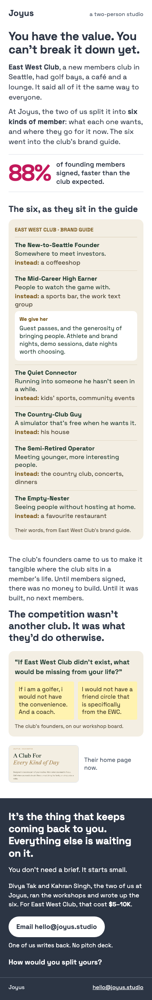
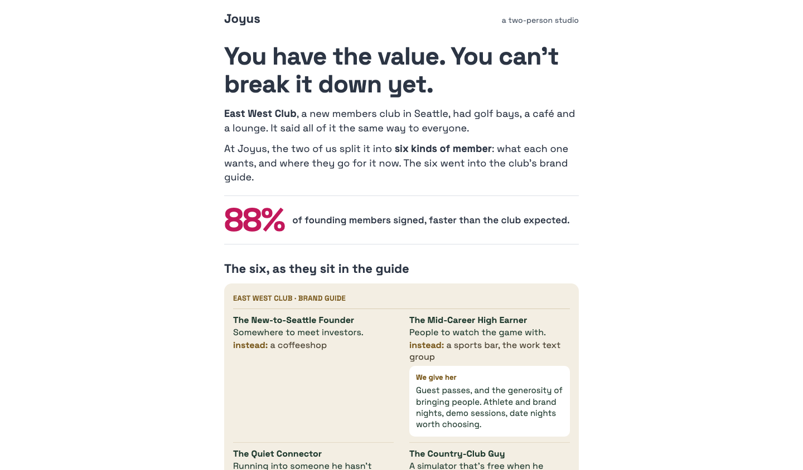
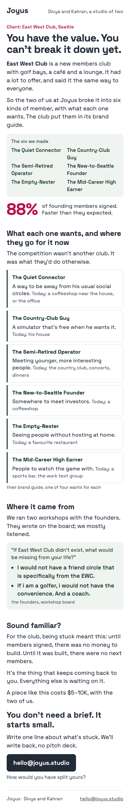
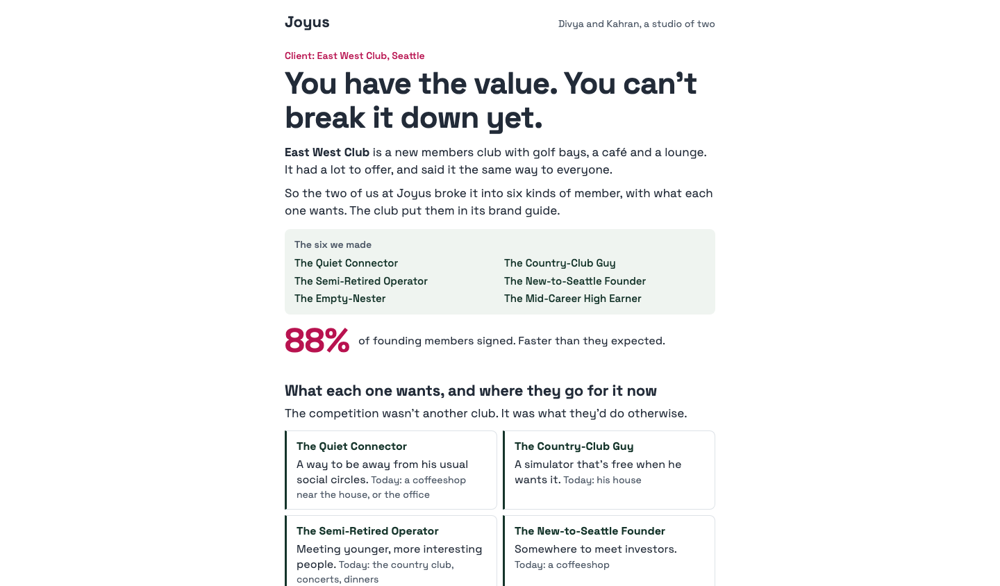
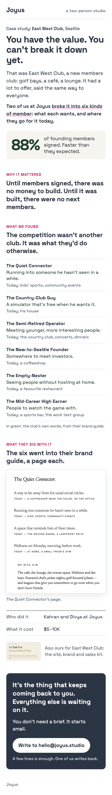
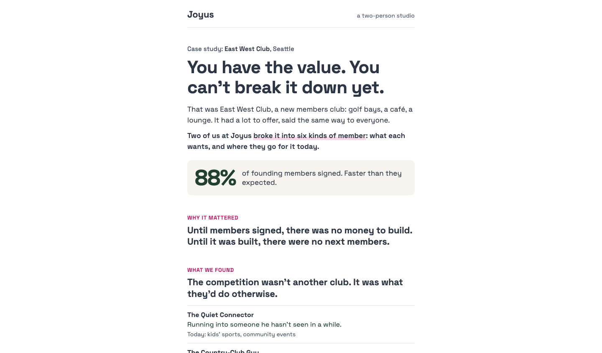
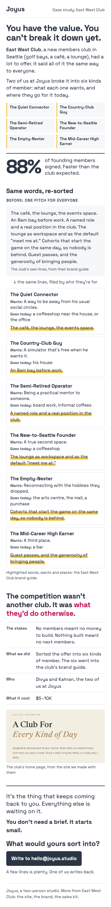
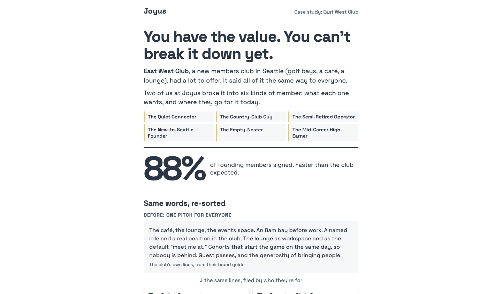

Study 87 · 7 November 2026 · for Kahran
EWC, a new brief from the blind judges, four ways
A restart. Study 86 scored well on our own paper judge and failed every blind reader: they saw phone screenshots only, and every one of them gave 0 of 2 on "clear after ten seconds, or tired?". So the brief was rewritten from what those readers took in (brief.md): Joyus, East West Club in full, the problem as the reader's own ("You have the value. You can't break it down yet."), what the studio made (six kinds of member), the 88%, all on the first phone screen; no prism, no labels in code, no placeholders, at most five phone screens. Pages were built against it and run through the same blind judges: a ten-second test on screen one by two readers, the 21 bet questions on the whole page, then a rank. These are the four that passed, each as built, in the rank's order.
"This didn't work since it failed everyone."
Kahran, 7 Nov, on Study 86, asking for the judges to write a new brief and start a new approach.a · Six members first
Ten-second test: both readers pass (1, 1) · the bet 30 of 42 · ranked 1st · 2562px on a phone, about 3 screens
Rank: The only one where the first screen shows the work itself and not a list of names. Each type gets what they want and what they do "instead", so the first real entry a founder reads is "The New-to-Seattle Founder: somewhere to meet investors, instead: a coffeeshop". Seeing themselves on the page is literal here. The 88% sits up top. The close is strong: price, real names, "One of us writes back. No pitch deck.", and "How would you split yours?", which turns it back on the reader. Weak spots: "You have the value. You can't break it down yet." still takes two reads, and the middle repeats the six in a second box ("competition wasn't another club"), which is filler for a busy reader.


b · Your questions, answered
Ten-second test: both readers pass (1, 1) · the bet 29 of 42 · ranked 2nd · 2421px on a phone, about 3 screens
Rank: Fastest skim: 3 screens total. A client tag sits above the headline, all six names show in a grid on the first screen, and the 88% is right under them. "Sound familiar?" plus "Write one line about what's stuck" is the lowest-effort ask of the four, so it does best on "wants to write". It loses to a because the first screen gives only labels ("The Quiet Connector" tells a founder nothing). The want and the "today" alternative show up a scroll later, set in a grey run-on that's easy to skip. The cards also look generic, so it reads more like a template than proof.


c · Told straight, shown
Ten-second test: both readers pass (1, 1) · the bet 27 of 42 · ranked 3rd · 2749px on a phone, about 3 screens
Rank: Clear and well argued ("Until members signed, there was no money to build..."), and the brand-guide page is real proof. But the first screen is all text and a stat with none of the six on it, so understanding is slower and there's nothing there yet a reader could see themselves in. Labelled sections like "WHY IT MATTERED" and "WHAT WE FOUND" read like a consultancy case study, not a friend's link. The ask is fine but generic.


d · Same words, re-sorted
Ten-second test: both readers pass (1, 1) · the bet 24 of 42 · ranked 4th · 3152px on a phone, about 4 screens
Rank: Slowest. After the name grid comes a dense paragraph labelled "BEFORE: ONE PITCH FOR EVERYONE", which makes the reader wade through the club's copy before getting anything back. The yellow highlighter on every card adds noise. The idea ("same lines, filed by who they're for") is clever, but it's a designer's point, not a founder's. Longest page with the most reading before the payoff. The close "What would yours sort into?" is good but arrives too late.


How it was put together
Each page is the file the blind judges saw (src/a.html to src/d.html), joined into one page by build.cjs: the asked-for option keeps its own style and body, the other three leave the page. Nothing redesigned, no words moved. The scores are the blind readers', not our paper judge's; Study 86's pages scored 18.5 to 22.5 of 42 with the same readers.